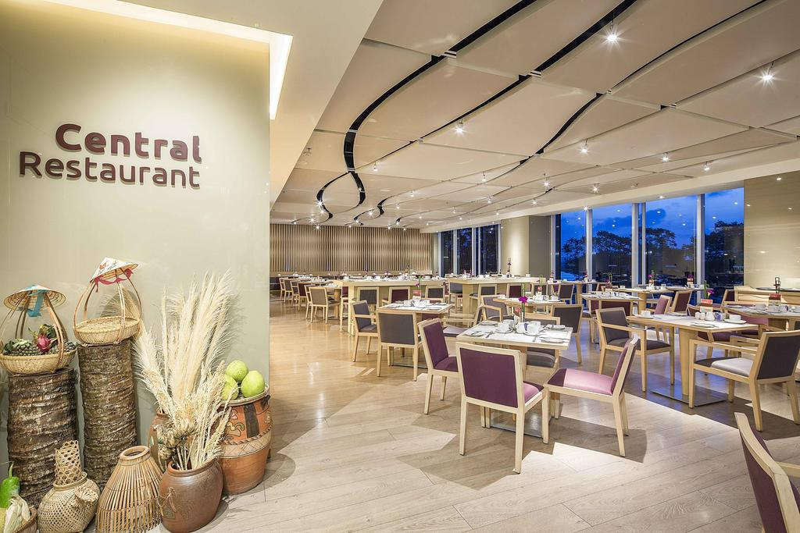

Silverland Sakyo Hotel & Spa

Yêu thích nét thơ mộng nơi đây.
M Hotel Saigon là khách sạn 4 sao Hồ Chí Minh cách chợ Bến Thành và khu mua sắm Vincom chỉ 500m, ngay trung tâm quận 1. Thuận tiện để di chuyển đến các nơi lân cận.
M Hotel Saigon
Tọa lạc tại vị trí thuận tiện ở Quận 1, Alagon Zen Hotel & Spa chỉ cách cách Chợ Bến Thành 250m đi bộ, Dinh Thống Nhất 600m đi bộ và Sân bay quốc tế Tân Sơn Nhất 20 phút lái xe. Khách sạn là sự lựa chọn số 1 cho du khách thích bảo tàng, mua sắm và lịch sử.
Alagon Zen Hotel & Spa
Nổi tiếng với đội ngũ nhân viên nhiệt tình, thân thiện Silverland Sakyo Hotel & Spa là cái tên khách sạn 4 sao ghi đậm trong lòng khách du lịch, người công tác mỗi khi ghé đến Sài Gòn.
Silverland Sakyo Hotel & Spa
Nằm tại Quận 1, khach sạn có view hướng thẳng ra sông Sài Gòn. Liberty Central Saigon Riverside Hotel được bầu chọn là một trong những khách sạn 4 sao sang chảnh chất tại Hồ Chí Minh.
Liberty Central Saigon Riverside Hotel
